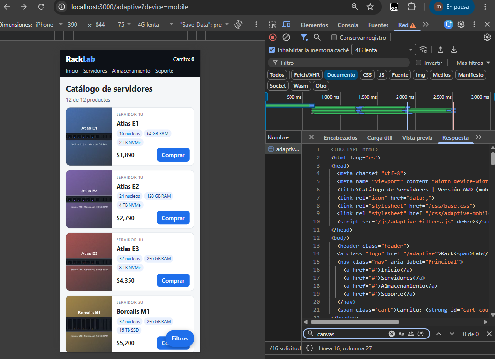
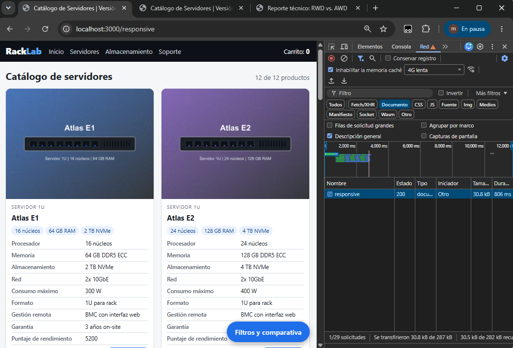
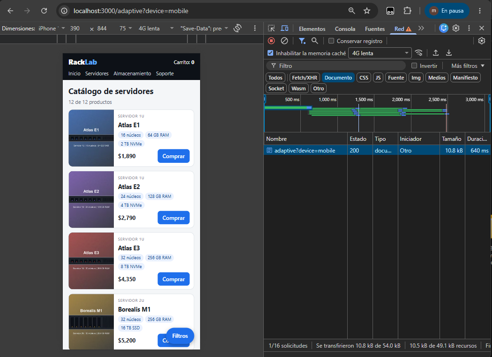
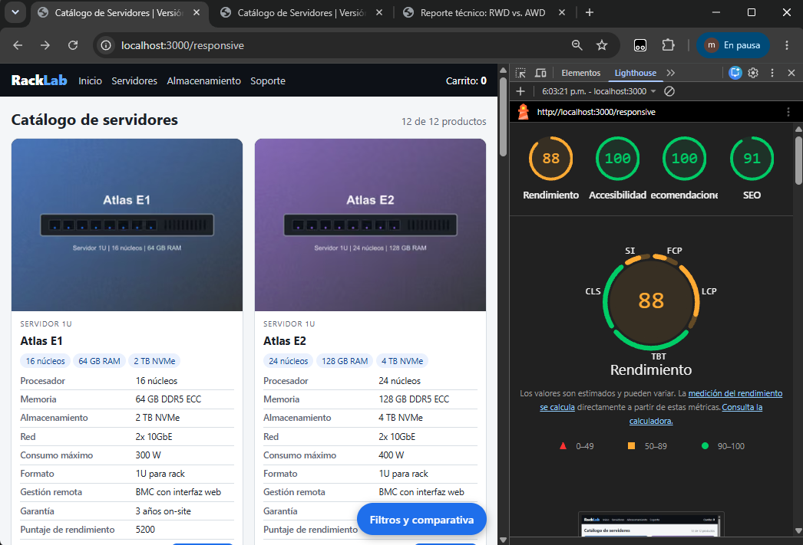
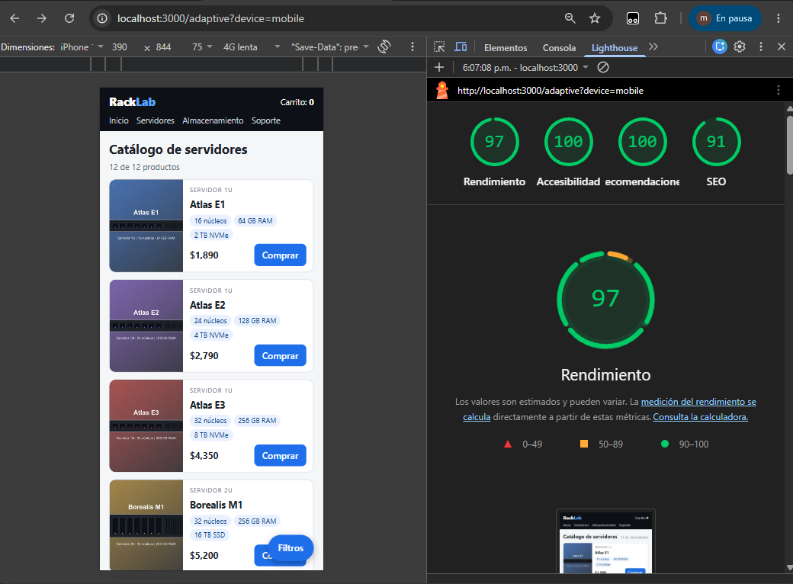

Se implementó un catálogo con dos estrategias: Diseño Web Responsivo (/responsive, HTML estático adaptado en cliente) y Diseño Web Adaptativo (/adaptive, servidor Express que detecta el dispositivo). Se midió la transferencia de red y rendimiento en móvil para emitir una recomendación arquitectónica. Productos ficticios.
| Parámetro | Valor |
|---|---|
| Equipo y SO | Windows 11, HP OMEN 16-c0xxx conectada a la corriente |
| Navegador | Chrome , sin extensiones |
| Servidor | Node.js , Express, NODE_ENV=production, sin compresión ni lazy loading |
| Dispositivo (Network) | iPhone 12 Pro, 390 × 844 px (DevTools) |
| Red y CPU (Network) | Slow 4G, CPU 4x slowdown, Disable cache activado |
| Lighthouse | Modo Navigation, Mobile (Performance), Clear storage activado |
| Repeticiones | 3 corridas en Network y 5 en Lighthouse (se reporta la mediana) |
RWD. HTML estático generado desde products.js. Emplea CSS Grid/Flexbox y media queries (640px, 1025px). Las imágenes usan <picture> (AVIF/WebP/JPG) y srcset. En móvil, el panel de filtros colapsa sin recargar.
AWD. Middleware express-useragent evalúa User-Agent y Accept. Renderiza vistas separadas (desktop/mobile). La vista móvil excluye intencionalmente canvas, Chart.js y tabla de specs. Envía cabeceras Vary: User-Agent, Accept e imágenes escaladas (320px móvil, 640px desktop).
Prueba de exclusión real. El script de verificación (npm run check) pasó 7/7 comprobaciones. La búsqueda de las cadenas canvas o specs en el Response del documento móvil arrojó 0 coincidencias (Figura 1), comprobando que los elementos no se ocultan con display: none.

| Métrica / Indicador | RWD (Móvil) | AWD (Móvil) | Delta (%) |
|---|---|---|---|
| Tamaño del documento inicial (HTML) | 10.5 kB | 8.2 kB | -21.90 % |
| Peso total de la página (payload) | 450 kB | 310 kB | -31.11 % |
| Número de peticiones HTTP | 17 | 16 | -5.88 % |
| Largest Contentful Paint (LCP) | 2.1 s | 1.5 s | -28.57 % |
| Cumulative Layout Shift (CLS) | 0 | 0 | 0.00 % |
El AWD redujo el peso total y el LCP en ~30% al excluir scripts pesados (Chart.js) y código innecesario. Las peticiones HTTP se mantuvieron casi idénticas porque la carga principal proviene de las 12 imágenes de productos comunes en ambas vistas.




Rendimiento vs. Costo de Render. En móvil, el AWD eliminó 140 kB de payload y mejoró el LCP excluyendo módulos estructurales. Sin embargo, esto introdujo un costo de render en servidor de 26.7 ms por petición, en contraste con el tiempo prácticamente nulo de servir el estático RWD. Un RWD altamente optimizado (con carga diferida de Chart.js mediante import()) podría acercarse al desempeño del AWD.
Impacto en CDN y Deuda Técnica. El HTML del RWD se cachea eficientemente con una sola clave. El AWD exige enviar la cabecera Vary: User-Agent, Accept, lo que fragmenta la caché de la CDN por cada variante de navegador, obligando a normalizar identificadores en el borde para evitar picos de carga en el origen. Además, el AWD genera deuda técnica al requerir sincronización constante entre plantillas (mobile/desktop), duplicación de pruebas y riesgos de paridad en indexación SEO (mobile-first).
Recomendación empresarial. Recomiendo RWD como arquitectura por defecto debido a su simplicidad operativa y alta compatibilidad con CDN. El enfoque AWD solo se justifica si las diferencias de interfaz son profundamente estructurales y existe un tráfico móvil masivo. Por ejemplo, con 1,000,000 de visitas móviles al mes, el ahorro de 140 kB por visita equivale a 140 GB mensuales de transferencia; la empresa debe evaluar si el ahorro en costos de red compensa el aumento en procesamiento y mantenimiento del servidor.
loading="lazy" para garantizar el determinismo.